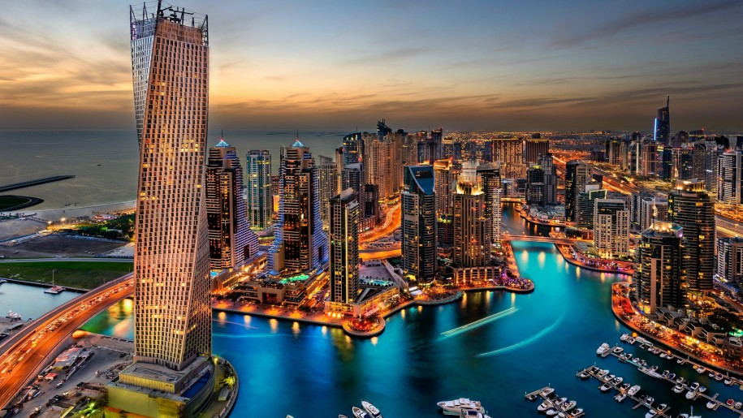

Based on statistical reports, most visited countries of 2021 are:
- Bangkok
- Thailand's capital
- Is a large city known for ornate shrines and vibrant street life. The boat-filled Chao Phraya River feeds its network of canals, flowing past the Rattanakosin royal district, home to opulent Grand Palace and its sacred Wat Phra Kaew Temple.
- Paris, France
- London, England
- Dubai, UAE
- The capital of the Emirate of Dubai
- Located in the eastern part of the Arabian Peninsula on the coast of the Persian
Gulf, Dubai
aims to be the business hub of Western Asia.It is also a major global transport hub
for
passengers and cargo.
- Singapore, Malaysia
- Kuala Lumpur
 Bangkok, Thailand
Bangkok, Thailand
 Paris, France
Paris, France
 London, England
London, England

Dubai
 Singapore
Singapore
Kuala Lumpur